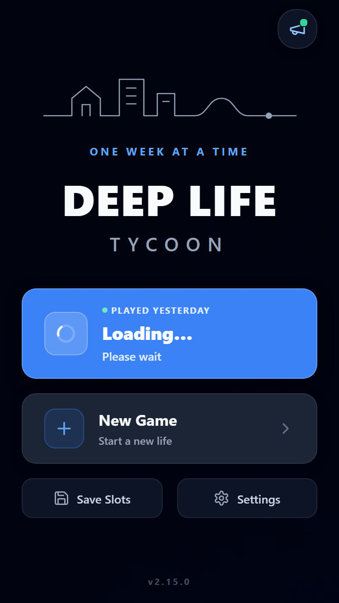
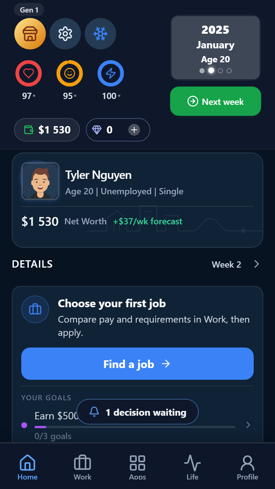
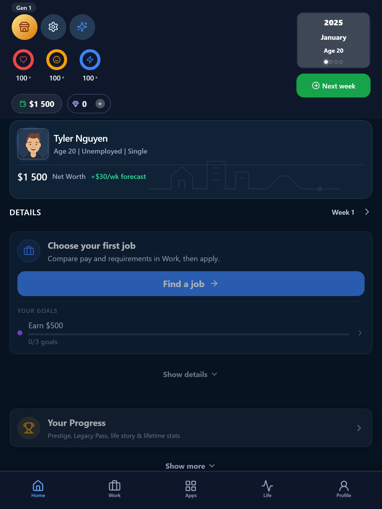
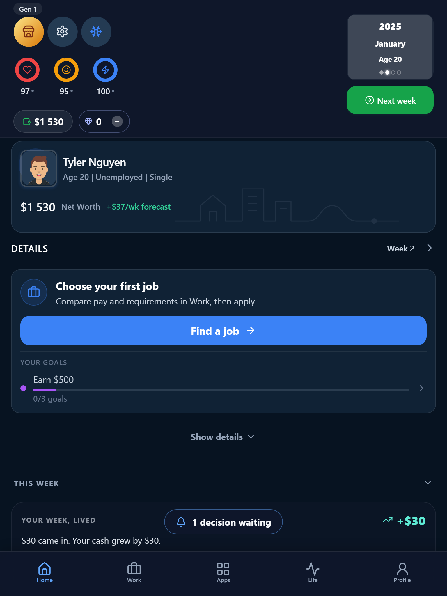

Actual browser captures, 27 September 2026. The visual layout is preserved. Rapid double clicks commit one week; controls recover after completion. Browser evidence is not signed-device ad acceptance.



